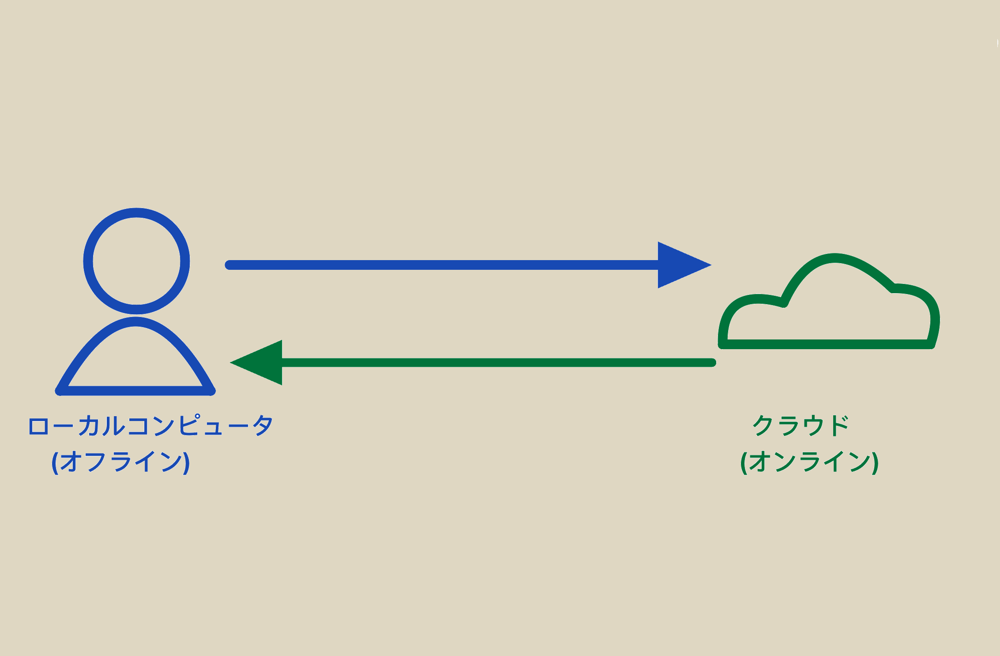

Gitとは？
Gitは分散型バージョン管理システムであり、ファイルやコードの履歴を追跡するために設計されています。
なぜGitを選ぶのか？
- バージョン管理：各変更を記録し、完全な履歴を提供。変更の追跡、比較、取り消しが可能。
- ブランチ管理：強力なブランチ機能により、並行開発や実験、新機能開発が干渉せずに行える。
- チーム協力：複数人での協力が可能。マージやコンフリクト解決機能により、作業の喪失を防ぐ。
- リモートリポジトリ：GitHubやGitLabなどのプラットフォームに対応し、コードの集中管理、バックアップ、共有ができる。

- 軽量かつ高速：インストールと設定が簡単で、速度と効率を重視して設計されている。
まとめ
Gitは無料かつオープンソースの分散型バージョン管理システムとして、シンプルで学びやすく、初心者にも非常に親しみやすいツールです。
その上、パフォーマンスやプロジェクト協力に対する互換性もあり、大規模なプロジェクトにも十分対応できます。
HTMLとは？
HTML（Hyper Text Markup Language）は、ウェブページを構築するための基本的なマークアップ言語であり、タグを使用してコンテンツの構造を定義します。
HTMLを選ぶのか?
- 標準と互換性：広く受け入れられており、W3Cが管理しているため、異なるブラウザでも一貫した表示が保証される。
- 学びやすい：シンプルで直感的な文法により、初心者でもすぐに使いこなせる。
- 拡張性：CSSやJavaScriptと組み合わせることで、動的でインタラクティブなウェブページを作成できる。
- SEO対応：優れたHTML構造は、ウェブサイトの検索ランキングを向上させる。
- アクセシビリティ：障害を持つユーザーにも使いやすいウェブページを作成できる。
- コンテンツ重視：コンテンツの整理と提示に集中しており、コンテンツ中心のサイト構築に適している。
- クロスプラットフォーム対応：さまざまなデバイスやプラットフォームに対応し、ウェブページが適切に表示されることを保証する。
まとめ
HTMLは標準化された基盤を持ち、学習しやすく、拡張性も高い言語です。その強力な互換性により、日常生活の至るところで使用されています。
個人用HTMLのタグ一覧（更新中）
- br：改行 - WordのEnterに似た機能
- ul：小見出しを作成 - 文字の前に点を追加
- ol：小見出しを作成 - 文字の前に番号を追加
- a href=：リンクを埋め込む
- h1~h5：異なるレベルの見出し
- img：画像を追加
- src=：ファイルのソース
参考資料
About Git
HTMLの基礎
所属
デザイン演習I·IIトップページ
XBPトップページ
 Noshiのデザイン演習第一回課題
Noshiのデザイン演習第一回課題